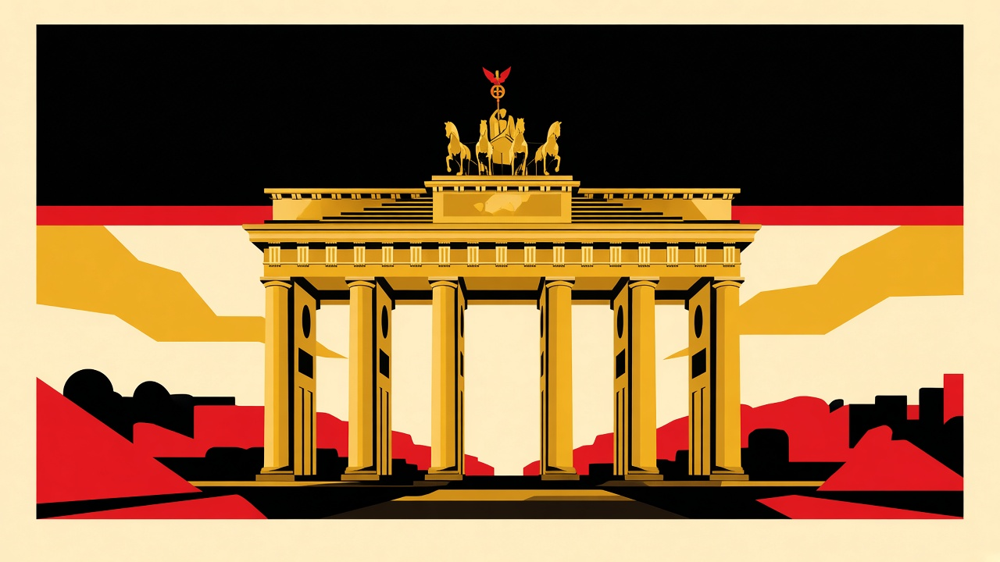
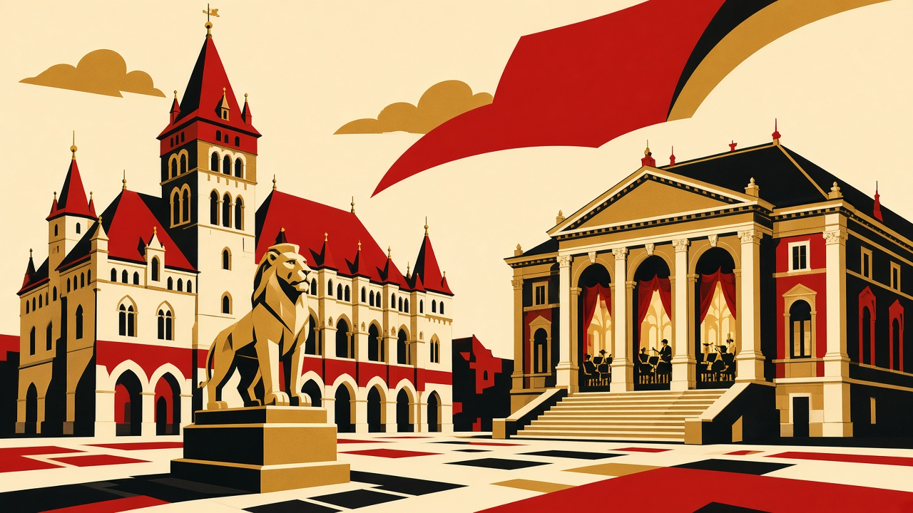
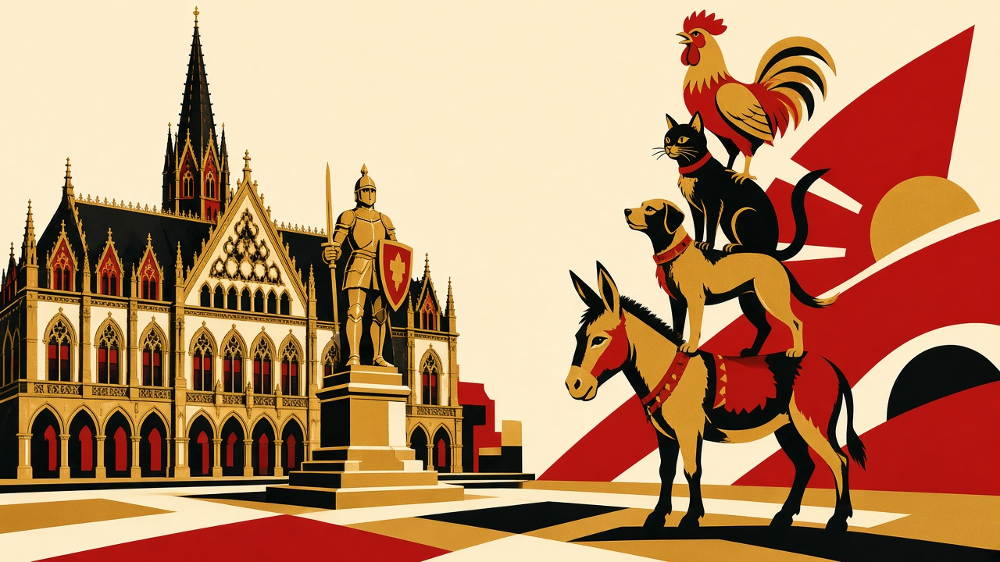
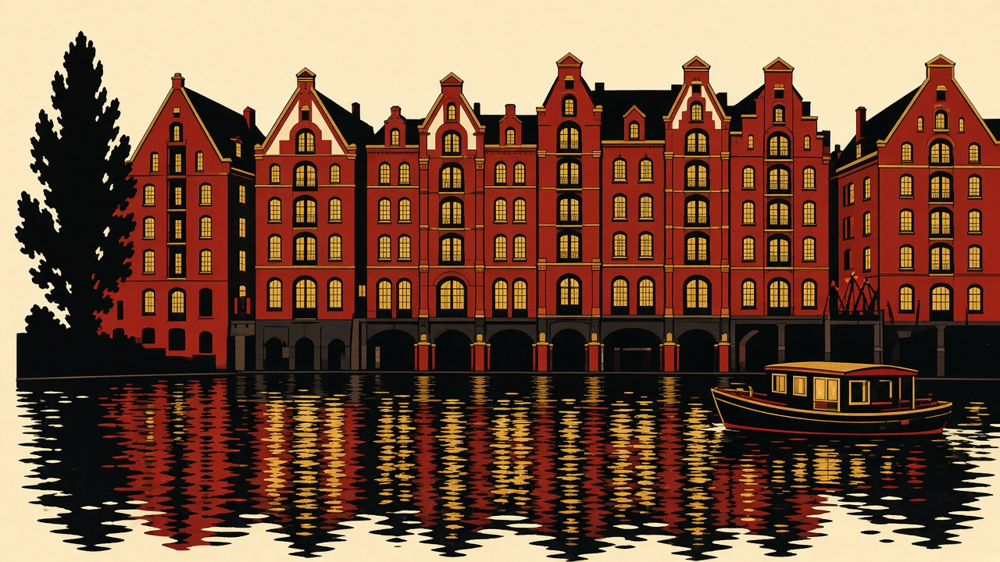

Vuelo pendiente
Málaga → Berlín Pendiente
Al aterrizar en BER, el tren de aeropuerto FEX deja en Berlin Hauptbahnhof en unos 30 minutos. El hotel está a menos de dos minutos de esa estación.
8–12 noviembre 2026
Borrador de horarios a partir de tu mapa. Los vuelos y los trenes están en blanco a propósito: cuando me pases cada billete, lo coloco y muevo las visitas alrededor.
Con esto recalculo cada día. El resto de la guía ya se puede usar.
Confirmado Propuesta, se mueve con los billetes Pendiente Hotel del mapa
En noviembre anochece sobre las 16:30. El domingo y el lunes la luz manda el plan. El martes es el día justo: Hannover por la mañana, Bremen por la tarde, Hamburgo para dormir. El miércoles es el único día entero en una ciudad.
| Noche | Ciudad | Hotel |
|---|---|---|
| 🐻 Dom 8 | Berlín | MEININGER Hotel Berlin Central Station Ella-Trebe-Straße 9, junto a la estación centralMapaBooking |
| 🎻 Lun 9 | Braunschweig | Frühlings-Hotel Bankplatz 7, casco antiguo. Unos 6 minutos a pie de la Volkswagen HalleMapaBooking |
| ⚓ Mar 10 y mié 11 | Hamburgo | Prize by Radisson, Hamburg City Recha-Lübke-Damm 28, Hammerbrook. Unos 15 minutos a pie de la estación, al lado de los canalesMapaBooking |
| ✈️ Jue 12 | Sin hotel. El vuelo sale de Hamburgo. | |

Al aterrizar en BER, el tren de aeropuerto FEX deja en Berlin Hauptbahnhof en unos 30 minutos. El hotel está a menos de dos minutos de esa estación.
Con una sola tarde, el recorrido que sí está junto es este. El Muro de la East Side Gallery queda aparte: solo cabe si aterrizas pronto, antes de las 14:00.
Cenar en esa misma zona, entre la puerta y Friedrichstraße, y volver al hotel en S-Bahn. Mañana el tren sale de la puerta de al lado.

Es el tramo del mapa que pide luz de día. Si prefieres el muro, cambia este bloque por la East Side Gallery: S-Bahn hasta Ostbahnhof y un paseo por Mühlenstraße, ida y vuelta en una hora.
El ICE directo suele tardar 1 h 15–1 h 30. Salir en esa franja te deja en Braunschweig sobre las 13:00, con tres horas de luz antes del concierto. Si el vuelo del domingo fue muy tarde y quieres más Berlín, dímelo y apretamos la tarde.
Hay consigna en Braunschweig Hbf. El centro está a un tranvía corto o a unos 20 minutos a pie. Todo el grupo de pins del centro cabe en este bloque. El museo del Burgplatz está en obras y el lunes, además, su otra sede cierra: se ve la plaza, no la exposición.
Volkswagen Halle, Europaplatz 1. Apertura del Braunschweig International Film Festival. La película, en inglés con subtítulos en alemán, dura 128 minutos con la Staatsorchester Braunschweig y el director Erik Ochsner. Cuenta con salir sobre las 21:45.
El hotel está a unos 6 minutos a pie. La entrada del concierto vale como billete de bus y tranvía de la ciudad (zona 40) desde las 16:30 hasta que cierra el servicio.
Misma noche en el Frühlings. Mañana el tren sale pronto.
Schloss Richmond queda al sur de la estación, en un parque. El Lokpark, también al sur, es un museo de trenes. La abadía de Riddagshausen está a unos 4 km al este y pide bus. Con el concierto a las 19:30 no caben. Si alguno te importa de verdad, lo metemos el martes a primera hora y recortamos Hannover.


Este trayecto es corto y frecuente: unos 30–45 minutos. Deja la maleta en la consigna de Hannover Hbf.
Todo el mapa menos los jardines está a 15 minutos a pie de la estación, en línea hacia el sur. Da para verlo con calma y volver a por la maleta.
Suele tardar alrededor de una hora. Otra consigna en Bremen Hbf.
El mercado, el Rolando, la catedral, Böttcherstraße y el Schnoor son un solo paseo. A las 16:30 ya es de noche; el Schnoor con luces cierra bien el día.
También alrededor de una hora. Desde la estación, el hotel queda a unos 15 minutos a pie hacia los canales.
Está en el mapa y merece la pena, y también se come el día: unos 20 minutos en tranvía cada trayecto, más el jardín. En este borrador se queda fuera para que Bremen exista. Si lo prefieres a Bremen, el martes pasa a ser Hannover con jardines y un tren directo más tarde a Hamburgo.
Reserva ya el Miniatur Wunderland para esta mañana. Abre todos los días, como mínimo de 9:30 a 18:00, y la entrada con hora evita la cola. Entre la maqueta y el paseo se va una mañana entera: calcula unas dos horas y media dentro.
En Speicherstadt, Kehrwieder. Desde el hotel se llega andando por los canales en unos 20 minutos. Al salir ya estás en el barrio de los almacenes.
Speicherstadt, Chilehaus, Deichstraße y la iglesia de San Nicolás (el memorial, la torre calcinada). Después el ayuntamiento y Alster Arcade, que están juntos.
La iglesia y las casitas de los viudos, en la misma manzana. Se puede subir a la torre si quieres ver el puerto desde arriba antes de bajar a él.
Túnel viejo del Elba desde Landungsbrücken, el muelle del Fischmarkt y Sankt Pauli. El mercado del pescado es el domingo de madrugada, así que ese pin es el barrio y el agua, no los puestos.
También están en el mapa. La Kunsthalle suele abrir de martes a domingo y queda al lado de la estación: encaja el jueves por la mañana si el vuelo sale por la tarde. El Außenalster es un paseo de lago, bonito si el tiempo acompaña, y sustituye bien al puerto si prefieres agua tranquila a Sankt Pauli.
Cuando tenga la hora de salida, cierro este hueco. Si el vuelo es a mediodía, sales del hotel temprano y esta casilla desaparece. Si sale a última hora de la tarde, da para la Kunsthalle o un paseo por el Außenalster y una comida.
El hotel está a unos 15 minutos a pie de la estación. Desde Hamburgo Hbf, el S-Bahn S1 deja en el aeropuerto en unos 25 minutos. Para un vuelo dentro de Schengen, llega unas 2 horas antes.
Regla práctica hasta que haya billete: sal del hotel tres horas antes del despegue.
Aeropuerto de Hamburgo (HAM). Aquí se cierra el viaje.
| Día | Viaje | Salida | Llegada | Duración |
|---|---|---|---|---|
| Dom 8 | ✈️ Málaga → Berlín | pendiente | pendiente | pendiente |
| Dom 8 | 🚆 Aeropuerto BER → Berlin Hbf | pendiente | pendiente | unos 30 min (FEX) |
| Lun 9 | 🚆 Berlín Hbf → Braunschweig Hbf | 11:30propuesta | 13:00propuesta | 1 h 15 – 1 h 30 |
| Mar 10 | 🚆 Braunschweig → Hannover Hbf | 08:30propuesta | 09:15propuesta | 30 – 45 min |
| Mar 10 | 🚆 Hannover → Bremen Hbf | 12:30propuesta | 13:30propuesta | unos 60 min |
| Mar 10 | 🚆 Bremen → Hamburgo Hbf | 17:00propuesta | 18:00propuesta | unos 60 min |
| Jue 12 | 🚇 Hamburgo Hbf → aeropuerto HAM | pendiente | pendiente | unos 25 min (S1) |
| Jue 12 | ✈️ Hamburgo → Málaga | pendiente | pendiente | pendiente |
🧳 El martes lleva maleta en tres trenes. La consigna de Hannover Hbf y la de Bremen Hbf evitan pasear el casco con ella. En Braunschweig, el lunes, haz lo mismo al llegar.
Mapa de origen: Brunswik Lalaland. Las tres casitas son los hoteles de arriba.